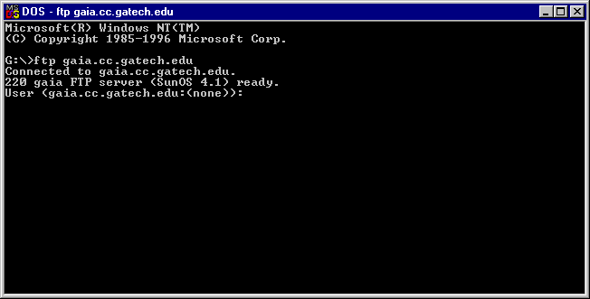
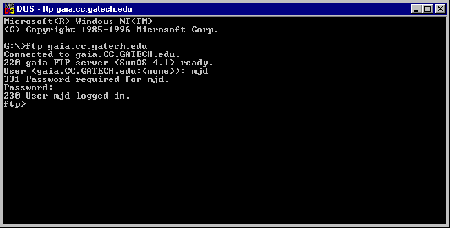
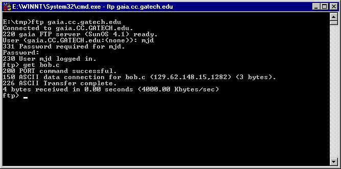
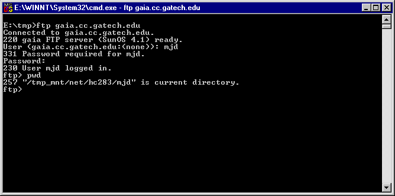
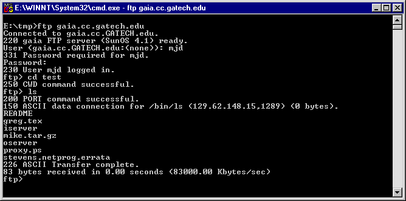

FTP Tutorial
Likely Scenario: You were so enraptured by a Computer Science class you took last semester that over the holidays (Christmas or Summer. It works for both.) you did some recreational programming to reinforce your understanding of the subject. Now you are back at school and eager to test your creations. Unfortunately, to compile the program, you need a copy of it on one a machine with an appropriate compiler. What do you do? Must you type it in again? No!
Answer:
FTP ("File Transfer Program") allows you to "put" and "get" files to and from remote machines so you can edit your programs on your local machine and upload them when you are ready to compile. To make FTP work, you need a client (your machine) and a server (the machine to/from which you are putting/getting files). Most UNIX and file server machines operate an FTP server for your file transferring pleasure so all you need to worry about is operating the client software, and that's easy!
The basic FTP client is a command-line program. Most operating systems with a command-line environment (e.g. DOS, UNIX, VMS) have a standard FTP client program. To use the client, type "ftp <FTP Server>" (no quotes) where <FTP Server> is the name (e.g. ftp.netscape.com) or IP address (e.g. 193.4.5.6) of the FTP Server. Below is an example in DOS where I have ftp'd to a machine called gaia.cc.gatech.edu.

Upon connection, the FTP Server prompts the user for a user id and password. This is usually the same user id and password needed to log onto the machine. After entering the user id and password, the FTP client is logged on as indicated by the FTP prompt

The user can either "put" files from the client to the server or "get" file from the server to the client. If you have been preparing a program to upload to the server, you must "put" it onto the server. To put a file, you simply type "put <filename>" at the FTP prompt where <filename> is the name of the file you want to upload (e.g. put bob.c uploads the file bob.c). To download a file, you simply type "get <filename>" at the FTP prompt. If you want to use wildcards (e.g. to upload all ".c" files), use the mget or mput command ("m" stands for "multiple"). For example, "mget *.c" downloads all files with the ".c" extension.

An obvious question is "From what directory does the file I put come, and to which directory does it go?" (or vice-versa for get). In FTP, you must keep track of both the client and server directory. The client directory is the directory from which you ftp'd. In the example above, I am in directory E:\tmp when I ftp to the server. Any puts or gets (without an absolute pathname) will be put from or gotten to this directory. When you FTP to a server, you are initially placed in a default starting directory, usually your "home" directory on the server. To determine where you are on the server, try the "pwd" (path of working directory) command at the FTP prompt as in

You may traverse the directories on the server with the "cd" (change directory) command and list the files in the current server directory with the "ls" (list) command as in

You may change the current working directory of the client with the "lcd" (local change directory) command. To see a list of commands, type "help" at the ftp prompt. You may get help with a specific command by typing "help <command>" (e.g. help lcd).
Graphical programs exist that hide the command-line complexities of FTP for the Macintosh (e.g. Fetch) and PC (e.g. CuteFTP and WS-FTP) so you may want to try these.